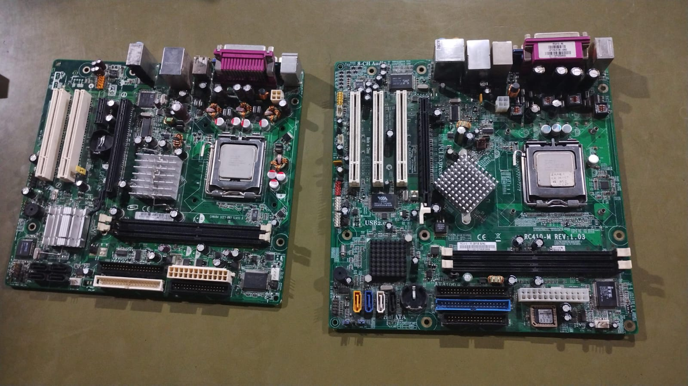
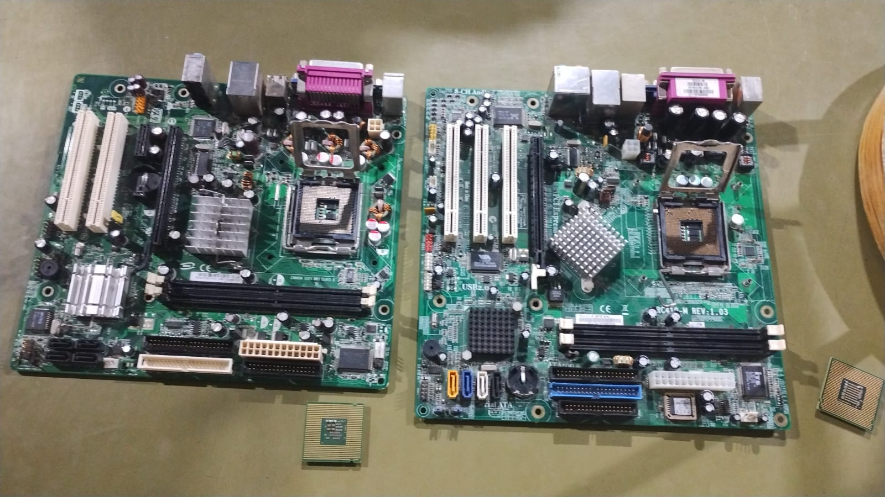
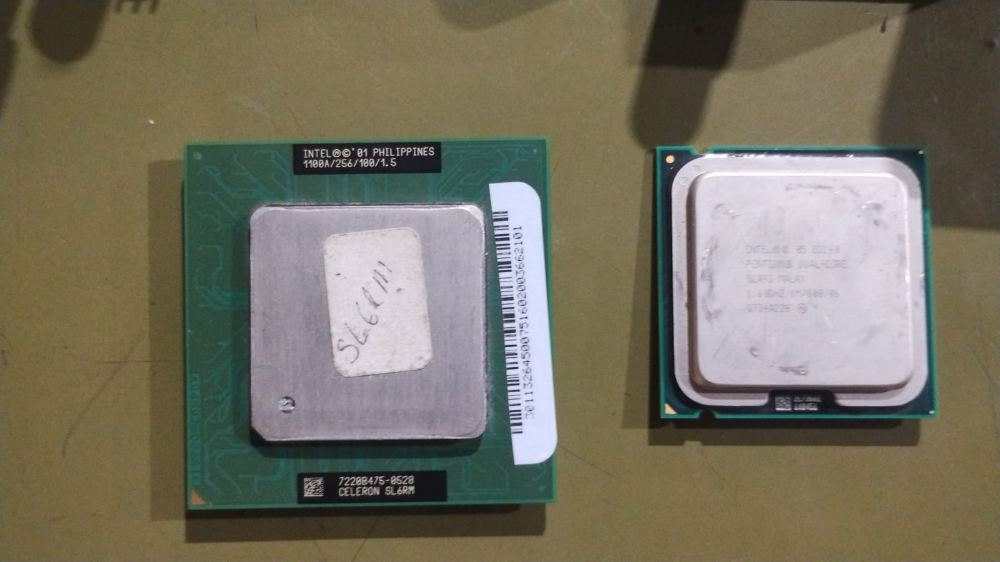
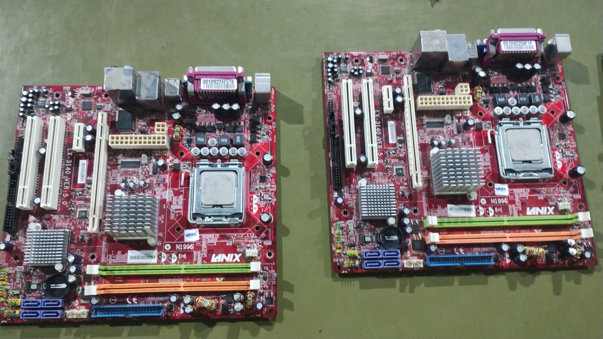

Práctica 2: Estructura y funcionamiento del procesador
Núcleos e hilos
Los núcleos físicos son unidades independientes que ejecutan instrucciones.
Los hilos permiten que cada núcleo maneje varias tareas a la vez.
Ejemplo: un procesador 6C/12T significa 6 núcleos físicos y 12 hilos.
Más núcleos e hilos mejoran la multitarea y el rendimiento en aplicaciones exigentes.
Velocidad de reloj
Se mide en GHz (gigahercios).
Indica cuántos ciclos de instrucción puede ejecutar por segundo.
Ejemplo: un CPU a 3.5 GHz realiza 3.5 mil millones de ciclos por segundo.
A mayor frecuencia, más rápido procesa, aunque depende también de la arquitectura interna.
Memoria caché
Memoria ultrarrápida dentro del procesador.
Niveles: L1 (pequeña y rápida), L2 (intermedia), L3 (más grande y compartida).
Una buena cantidad de caché reduce la latencia y mejora el rendimiento en multitarea.
Rendimiento
Depende de la combinación de núcleos, hilos, frecuencia y caché.
Procesadores modernos permiten ejecutar múltiples aplicaciones sin ralentizar el sistema.
En gaming y edición de video, los núcleos e hilos adicionales mejoran la experiencia.
En servidores, más núcleos e hilos permiten manejar múltiples usuarios simultáneamente.
Tipo de procesador e instalación
Se clasifican por socket (ej. LGA, PGA, BGA).
El socket define en qué tarjeta madre puede instalarse.
Ejemplo: Intel Core i7 con socket LGA1151 o AMD Ryzen con AM4.
Es importante que el procesador sea compatible con la tarjeta madre.
Evidencias fotográficas
Fotos de la práctica mostrando:
Ubicación del procesador en la tarjeta madre.
El procesador retirado para observación.
Dos equipos más donde se quitó y reinstaló el procesador.




Regresar